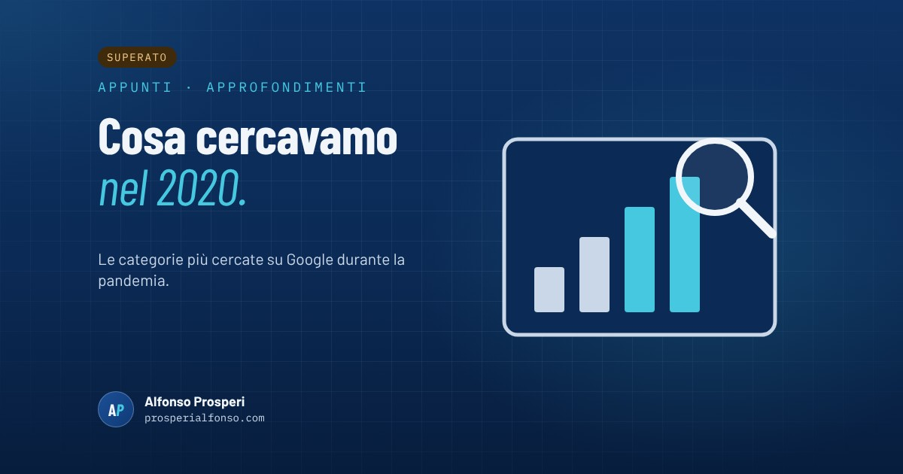

Quali sono le categorie più ricercate su Google? Per rispondere a questa domanda, nel 2020 Google aveva lanciato uno strumento gratuito chiamato "Categorie Retail in crescita", all'interno del sito Think with Google, pensato per aiutare le piccole e medie imprese italiane a tenersi aggiornate.
Era uno strumento interattivo che mostrava quali categorie di vendita al dettaglio stavano crescendo più in fretta nella Ricerca Google, con dati aggiornati ogni giorno.
Si vedeva bene quanto la pandemia avesse cambiato in modo imprevedibile il comportamento dei consumatori: in quell'anno, in Italia, le categorie più cercate erano legate soprattutto alla prevenzione sanitaria, come prodotti chimici da laboratorio, copriscarpe e igienizzanti per le mani.
E oggi?
Per capire che cosa cercano le persone e come cambiano gli interessi nel tempo, lo strumento gratuito di riferimento è Google Trends: permette di confrontare parole e argomenti, scegliere il Paese, la regione e il periodo, e vedere le ricerche in aumento.